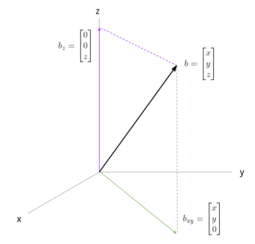
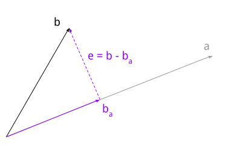

We'll start with a visual and intuitive representation of what a projection is. In the following diagram, we have vector b in the usual 3-dimensional space and two possible projections - one onto the z axis, and another onto the x,y plane.
If we think of 3D space as spanned by the usual basis vectors, a projection onto the z axis is simply:
A couple of intuitive ways to think about what a projection means:
- The projection of b on the z axis is a vector in the direction of the z axis that's closest to b.
- The projection of b on the z axis is the shadow cast by b when a flashlight is pointed at it in the direction of the z axis.
We'll see a more formal definition soon. A projection onto the x,y plane is similarly easy to express.
Projection onto a line
Projecting onto an axis is easy - as the diagram shows, it's simply taking the vector component in the direction of the axis. But how about projections onto arbitrary lines?
In vector space, a line is just all possible scalings of some vector [1].
Speaking more formally now, we're interested in the projection of onto , where the arrow over a letter means it's a vector. The projection (which we call ) is the closest vector to in the direction of . In other words, the dotted line in the diagram is at a right angle to the line a; therefore, the error vector is orthogonal to .
This orthogonality gives us the tools we need to find the projection. We'll want to find a constant c such that:
is orthogonal to , meaning that their dot product is zero: . We'll use the distributive property of the dot product in what follows:
Note that is the squared magnitude of ; for a unit vector this would be 1. This is why it doesn't matter if is a unit vector or not - we normalize it anyway.
We have a formula for c now - we can find it given and . To prepare for what comes next, however, we'll switch notations. We'll use matrix notation, in which vectors are - by convention - column vectors, and a dot product can be expressed by a matrix multiplication between a row and a column vector. Therefore:
Projection matrix
Since the fraction representing c is a constant, we can switch the order of the multiplication by a, and then use the fact that matrix multiplication is associative to write:
In our case, since a is a 3D vector, is a 3x3 matrix [2], while is a scalar. Thus we get our projection matrix - call it P:
A recap: given some vector , we can construct a projection matrix P. This projection matrix can take any vector and help us calculate its projection onto by means of a simple matrix multiplication!
Example of line projection
Consider our original example - projection on the z axis. First, we'll find a vector that spans the subspace represented by the z axis: a trivial vector is the unit vector:
What's the projection matrix corresponding to this vector?
Now, given any arbitrary vector we can find its projection onto the z axis by multiplying with P. For example:
Another example - less trivial this time. Say we want to project vectors onto the line spanned by the vector:
Let's compute the projection matrix:
Now we'll use it to calculate the projection of onto this line:
To verify this makes sense, we can calculate the error vector :
And check that it's indeed orthogonal to :
Projection onto a vector subspace
A subspace of a vector space is a subset of vectors from the vector space that's closed under vector addition and scalar multiplication. For , some common subspaces include lines that go through the origin and planes that go through the origin.
Therefore, the projection onto a line scenario we've discussed so far is just a special case of a projection onto a subspace. We'll look at the general case now.
Suppose we have an m-dimensional vector space , and a set of n linearly independent vectors . We want to find a combination of these vectors that's closest to some target vector - in other words, to find the projection of onto the subspace spanned by .
Arbitrary m-dimensional vectors are difficult to visualize, but the derivation here follows exactly the path we've taken for projections onto lines in 3D. There, we were looking for a constant c such that was the closest vector to . Now, we're looking for a vector which represents a linear combination of that is closest to a target .
If we organize as columns into a matrix called A, we can express this as:
This is a matrix multiplication: is a list of coefficients that describes some linear combination of the columns of A. As before, we want the error vector to be orthogonal to the subspace onto which we're projecting: this means it's orthogonal to every one of . The fact that vectors are orthogonal to can be expressed as [3]:
This is a system of linear equations, and thus it can be represented as a matrix multiplication by a matrix with vectors in its rows; this matrix is just :
But , so:
Since the columns of A are linearly independent, is an invertible matrix [4], so we can isolate c:
Then the projection is:
Similarly to the line example, we can also define a projection matrix as:
Given a vector , P projects it onto the subspace spanned by the vectors :
Let's make sure the dimensions work out. Recall that A consists of n columns, each with m rows. So we have:
Since the vector is m-dimensional, is valid and the result is another m-dimensional vector - the projection .
Example of subspace projection
At the beginning of this post there's a diagram showing the projection of an arbitrary vector onto a line and onto a plane. We'll find the projection matrix for the plane case now. The projection is onto the xy plane, which is spanned by these vectors:
Collecting them into a single matrix A, we get:
To find P, let's first calculate :
This happens to be the identity matrix, so its inverse is itself. Thus, we get:
We can now project an arbitrary vector onto this plane by multiplying it with this P:
Granted, this is a fairly trivial example - but it works in the general case. As an exercise, pick a different pair of independent vectors and find the projection matrix onto the plane spanned by them; then, verify that the resulting error is orthogonal to the plane.
Properties of projection matrices
Projection matrices have some interesting properties that are educational to review.
First, projection matrices are symmetric. To understand why, first recall how a transpose of a matrix product is done:
As a warm-up, we can show that is symmetric:
Now, let's transpose P:
Here we've used the fact that the inverse of a symmetric matrix is also symmetric, and we see that indeed .
Second, projection matrices are idempotent: ; this isn't hard to prove either:
Intuitive explanation: think about what a projection does - given some , it calculates the closest vector to it in the desired subspace. If we try to project this projection again - what will we get? Well, still the closest vector in that subspace - itself! In other words:
Projections onto orthogonal subspaces
There's another special case of projections that is interesting to discuss: projecting a vector onto orthogonal subspaces. We'll work through this using an example.
Consider the vector:
We'll find the projection matrix for this vector:
Now, consider the following vector, which is orthogonal to :
Its projection matrix is:
It's trivial to check that both and satisfy the properties of projective matrices; what's more interesting is that does as well - so it's also a proper projection matrix!
To take it a step further, consider yet another vector:
The vectors are all mutually orthogonal, and thus form an orthogonal basis for . We can calculate in the usual way, and get:
Not only is is a projection matrix, it's a very familiar matrix in general:
This is equivalent to saying that for any vector :
Hopefully this makes intuitive sense because it's just expressing in an alternative basis for [5].
| [1] | We're dealing with vector spaces, where we don't really have lines - only vectors. A line is just a visual way to think about certain subspaces of the vector space . Specifically, a line through the origin (lines that don't go through the origin belong in affine spaces) is a way to represent where is a vector in the same direction as this line and c is a constant; in other words it's the subspace of spanned by . |
| [2] | By the rules of matrix multiplication: we're multiplying a column vector (a 3x1 matrix) by a row vector (a 1x3 matrix). The multiplication is allowed because the inner dimensions match, and the result is a 3x3 matrix. |
| [3] | Recall from the earlier example: we're dropping the explicit vector markings to be able to write matrix arithmetic more naturally. By default vectors are column vectors, so expresses the dot product between vectors and . |
| [4] | It's possible to prove this statement, but this post is already long enough. |
| [5] | This is a special case of a change of basis, in which the basis is orthogonal. |